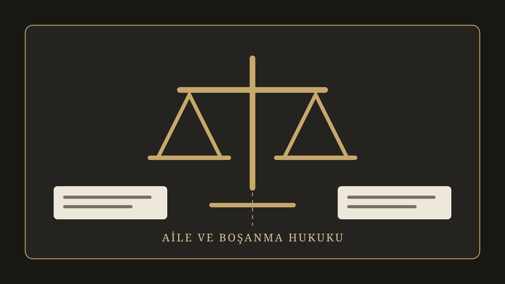

Çekişmeli boşanmanın hukuki dayanakları nelerdir?
Boşanma sebepleri Türk Medeni Kanunu'nda düzenlenir. Uygulamada sık karşılaşılan genel sebep TMK m.166'da yer alan evlilik birliğinin temelinden sarsılmasıdır. Bunun yanında kanunda özel boşanma sebepleri de bulunmaktadır. Davanın hangi hukuki sebebe dayandığı, hangi vakıaların ileri sürüldüğü ve bunların usulüne uygun biçimde ispatlanıp ispatlanamadığı önem taşır.
Dava süreci nasıl ilerler?
Dava ve cevap dilekçeleri
Taraflar iddia ve savunmalarını, dayandıkları vakıaları ve delillerini medeni usul hükümleri çerçevesinde mahkemeye sunar. Dilekçelerdeki vakıaların açık ve birbiriyle bağlantılı biçimde ortaya konulması, ispat faaliyetinin sınırlarının belirlenmesi açısından önemlidir.
Ön inceleme ve tahkikat
Uyuşmazlık konuları belirlendikten sonra çekişmeli vakıalara ilişkin deliller toplanır ve değerlendirilir. Tanıkların dinlenmesi, ilgili kayıtların getirtilmesi veya somut dosyanın niteliğine göre başka incelemeler yapılması gündeme gelebilir.
Boşanma davasında deliller nasıl değerlendirilir?
HMK m.189 uyarınca taraflar kanunda belirtilen süre ve usule uygun olarak ispat hakkına sahiptir; hukuka aykırı olarak elde edilmiş deliller mahkeme tarafından bir vakıanın ispatında dikkate alınamaz. Bu nedenle mesaj, fotoğraf, ses veya görüntü kaydı gibi materyaller bakımından yalnızca içeriğin değil, elde edilme biçiminin de hukuken değerlendirilmesi gerekir.
Tanık delili
Tanık anlatımlarının hangi olaya ilişkin olduğu, tanığın olayı ne şekilde bildiği ve anlatımın diğer delillerle uyumu önemlidir. Soyut değerlendirmeler yerine uyuşmazlık konusu somut vakıalara ilişkin beyanlar ispat bakımından değerlendirilir.
Belge ve kayıtlar
Resmî kayıtlar, yazılı belgeler ve hukuka uygun biçimde elde edilen diğer kayıtlar somut uyuşmazlığın niteliğine göre delil olabilir. Her kayıt her iddiayı ispatlamaz; delil ile ispatlanmak istenen vakıa arasında bağlantı bulunmalıdır.
Dava devam ederken hangi geçici önlemler alınabilir?
TMK m.169'a göre boşanma veya ayrılık davası açılınca hâkim, davanın devamı süresince gerekli olan; özellikle eşlerin barınmasına, geçimine, eşlerin mallarının yönetimine ve çocukların bakım ve korunmasına ilişkin geçici önlemleri re'sen alır. Somut dosyada tedbir nafakası, çocuğun geçici bakım düzeni veya kişisel ilişki gibi konular bu çerçevede gündeme gelebilir.
Velayet ve çocukla kişisel ilişki nasıl belirlenir?
Çocukla ilgili kararların merkezinde çocuğun üstün yararı bulunur. Çocuğun yaşı, gelişimi, bakım koşulları, ebeveynlerle ilişkisi ve somut olayın diğer özellikleri birlikte değerlendirilir. Gerektiğinde uzman incelemesi veya sosyal inceleme raporu da dosyanın değerlendirilmesinde rol oynayabilir.
Nafaka ve tazminat talepleri nasıl ele alınır?
Maddi ve manevi tazminat
TMK m.174, boşanma yüzünden mevcut veya beklenen menfaatleri zedelenen kusursuz veya daha az kusurlu tarafın, kusurlu taraftan uygun maddi tazminat isteyebilmesini; boşanmaya sebep olan olaylar yüzünden kişilik hakkı saldırıya uğrayan tarafın ise kusurlu diğer taraftan manevi tazminat isteyebilmesini düzenler. Şartların gerçekleşip gerçekleşmediği her dosyada ayrıca incelenir.
Yoksulluk ve iştirak nafakası
TMK m.175 kapsamında boşanma yüzünden yoksulluğa düşecek tarafın, kanundaki koşullar varsa diğer taraftan mali gücü oranında yoksulluk nafakası istemesi gündeme gelebilir. Çocuğun bakım ve eğitim giderlerine katılım ise çocukla ilgili düzenlemeler çerçevesinde ayrıca değerlendirilir.
Hâkim boşanma olaylarını nasıl değerlendirir?
TMK m.184 boşanmada yargılama usulüne ilişkin özel kurallar içerir. Hâkim, boşanma veya ayrılık davasının dayandığı olguların varlığına vicdanen kanaat getirmedikçe bunları ispatlanmış sayamaz ve delilleri serbestçe takdir eder. Bu nedenle yalnızca iddianın ileri sürülmesi değil, dosya kapsamındaki ispat durumu önemlidir.
Görevli mahkeme hangisidir?
4787 sayılı Aile Mahkemelerinin Kuruluş, Görev ve Yargılama Usullerine Dair Kanun'un 4. maddesi uyarınca Türk Medeni Kanunu'nun aile hukukuna ilişkin uyuşmazlıklarından doğan dava ve işler aile mahkemelerinin görev alanındadır. Yetki ise somut olay ve ilgili kanun hükümlerine göre ayrıca değerlendirilir.
Sık sorulan sorular
Çekişmeli boşanma davasında hangi deliller kullanılabilir?
Somut olaya göre tanık, belge, kayıt ve diğer hukuka uygun deliller kullanılabilir. Delilin hukuka uygunluğu ve uyuşmazlıkla bağlantısı ayrıca değerlendirilir.
Dava sürerken nafaka ve çocukla ilgili geçici karar verilebilir mi?
Evet. TMK m.169 kapsamında hâkim dava süresince gerekli geçici önlemleri alabilir.
Maddi ve manevi tazminat istenebilir mi?
TMK m.174'teki şartların oluşması hâlinde maddi ve manevi tazminat talepleri gündeme gelebilir.
Velayette temel ölçüt nedir?
Çocuğun üstün yararı temel ölçüttür; somut olayın tüm koşulları birlikte değerlendirilir.
Davanın ne kadar süreceği önceden söylenebilir mi?
Kesin süre vermek mümkün değildir. Tebligat, deliller, tanıklar, uzman incelemeleri ve kanun yolları süreyi etkileyebilir.